Справочник по 1С. Авторизация/Импорт
Шаблон структуры материалов и программного кода конфигурации
1. Разработка ER диаграммы
Исходные данные (Таблицы Excel)
Ниже разместите скриншоты или описание структуры импортируемых таблиц:
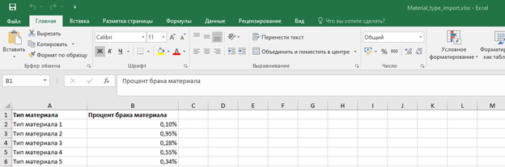
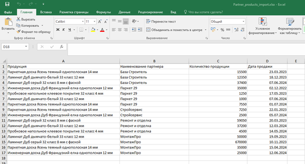
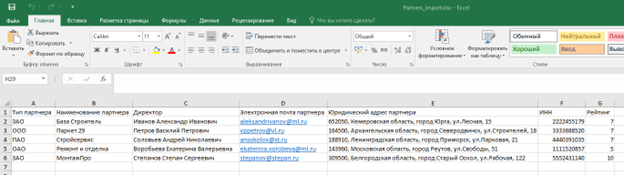
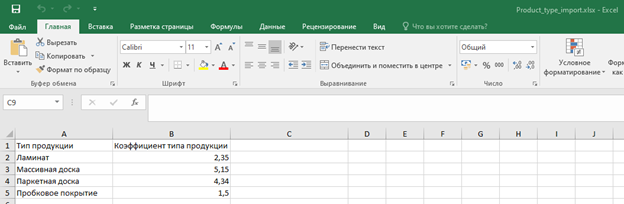
Проектируемая ER-диаграмма
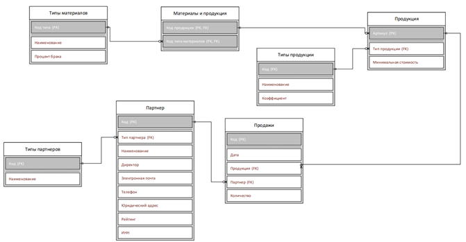
2. Создание объектов конфигурации 1С
Теоретическая справка по объектам
Применительно к 1С сущности будут созданы при помощи следующих объектов
конфигурации:
Справочники - это объект конфигурации (каталог) для хранения однотипных данных со списочной структурой,
служит хранилищем информации. Например: контрагенты (поставщики, покупатели), номенклатура (товары,
услуги, материалы), сотрудники
Документ - это объект конфигурации, фиксирующий факт хозяйственной операции или событие в жизни
предприятия. Обязательно имеет время, когда произошло то или иное событие. Например: продажа, прием на
работу, прием на склад и т.д.
Перечисление - это объект конфигурации, предназначенный для хранения фиксированного набора значений,
которые не меняются в процессе работы пользователей Например: («На согласовании», «В работе»,
«Закрыт»); («Без НДС», «10 %», «20 %»); («ОАО», «ПАО», «ООО») и т.д.
1. Типы материалов – Справочник
2. Продукция – Справочник
3. Типы продукции – Справочник
4. Партнеры – Справочник
5. Материалы и продукция – Табличная часть Справочника Продукция (в таб.части один реквизит - >Материалы
– ссылка на Типы материалов)
6. Продажи – Документ
7. Типы партнеров – Перечисление
Список создаваемых объектов
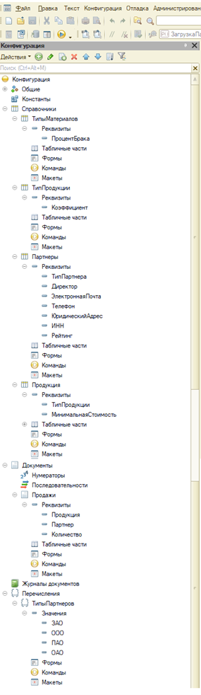
Настройка свойств объектов метаданных
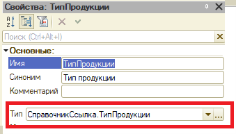
Использование стандартных реквизитов
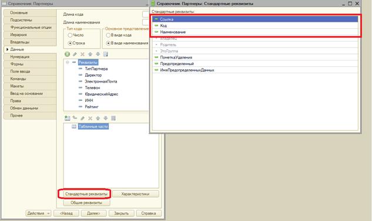
Итоговое дерево конфигурации
3. Таблица «Пользователи»
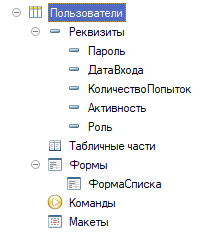
Реквизиты и их типы данных
Разместите здесь параметры настройки реквизитов (Имя, Синоним, Тип данных, Состав даты/Длина):
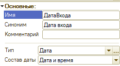
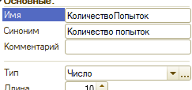
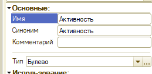
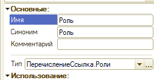
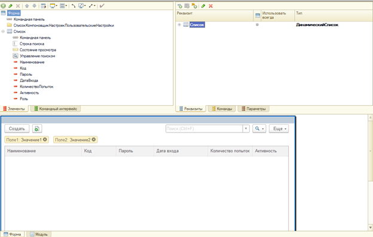
4. Загрузка данных из Excel
Пошаговое создание обработки импорта
1. Создадим Обработку ЗагрузкаДанныхИзExcel
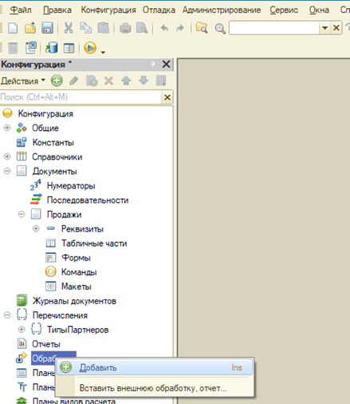
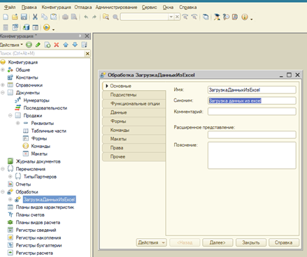
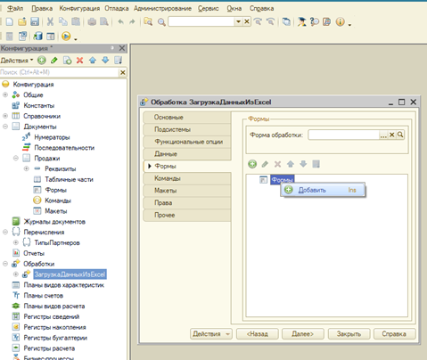
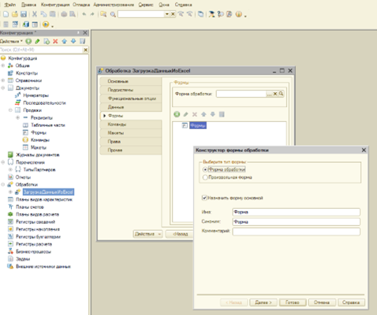
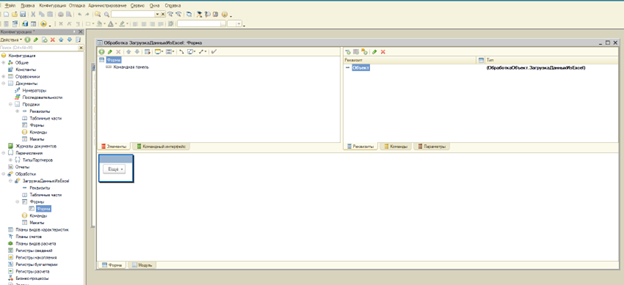
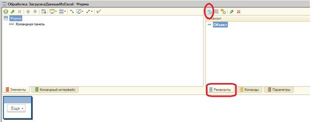
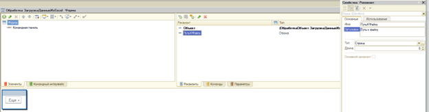
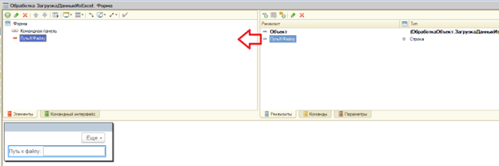
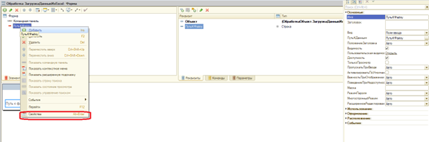
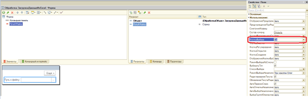
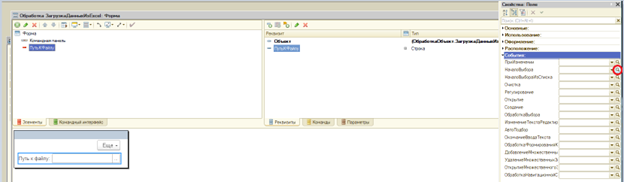
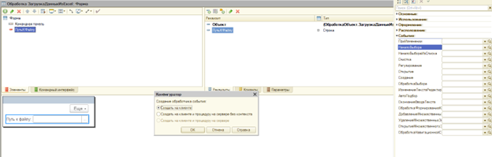
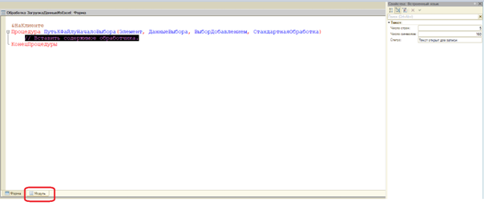
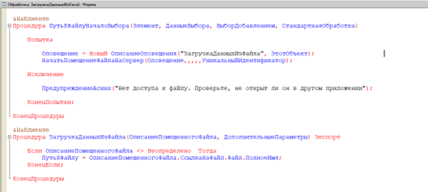
Обработчики событий выбора файла
Код процедур на клиенте для открытия диалога выбора файла:
&НаКлиенте
Процедура ПутьКФайлуНачалоВыбора(Элемент, ДанныеВыбора, ВыборДобавлением, СтандартнаяОбработка)
Попытка
Оповещение = Новый ОписаниеОповещения("ЗагрузкаДанныхИзФайла", ЭтотОбъект);
НачатьПомещениеФайлаНаСервер(Оповещение,,,,,УникальныйИдентификатор);
Исключение
ПредупреждениеАсинх("Нет доступа к файлу. Проверьте, не открыт ли он в другом приложении");
КонецПопытки;
КонецПроцедуры
&НаКлиенте
Процедура ЗагрузкаДанныхИзФайла(ОписаниеПомещенногоФайла, ДополнительныеПараметры) Экспорт
Если ОписаниеПомещенногоФайла <> Неопределено Тогда
ПутьКФайлу = ОписаниеПомещенногоФайла.СсылкаНаФайл.Файл.ПолноеИмя;
КонецЕсли;
КонецПроцедуры
Алгоритм чтения и импорта данных на сервере
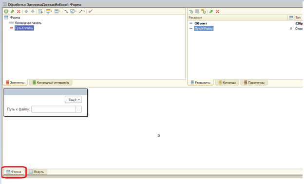
ЗагрузитьПартнера
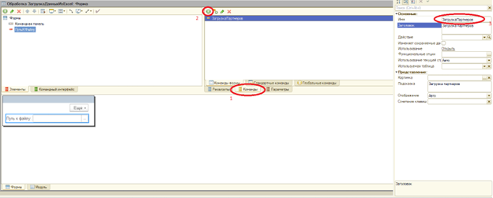
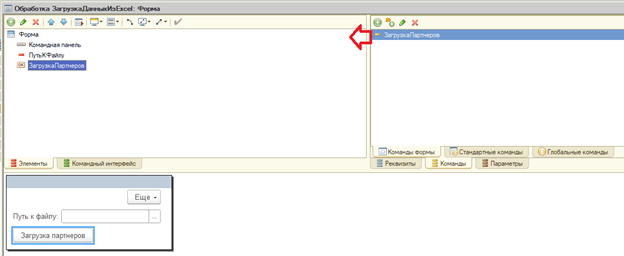
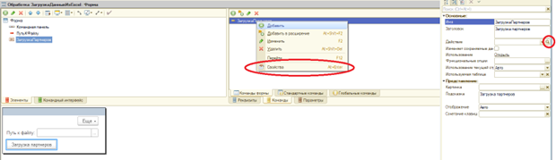
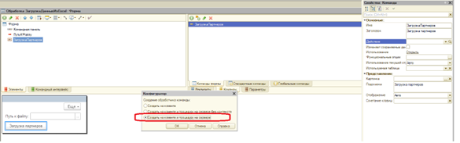
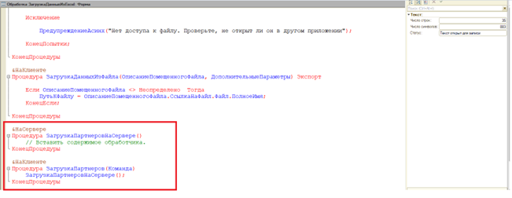
&НаКлиенте
Процедура ПутьКФайлуНачалоВыбора(Элемент, ДанныеВыбора, ВыборДобавлением, СтандартнаяОбработка)
Попытка
Оповещение = Новый ОписаниеОповещения("ЗагрузкаДанныхИзФайла", ЭтотОбъект);
НачатьПомещениеФайлаНаСервер(Оповещение,,,,,УникальныйИдентификатор);
Исключение
ПредупреждениеАсинх("Нет доступа к файлу. Проверьте, не открыт ли он в другом приложении");
КонецПопытки;
КонецПроцедуры
&НаКлиенте
Процедура ЗагрузкаДанныхИзФайла(ОписаниеПомещенногоФайла, ДополнительныеПараметры) Экспорт
Если ОписаниеПомещенногоФайла = Неопределено Тогда
ПредупреждениеАсинх("Файл не был загружен на сервер");
Возврат;
КонецЕсли;
ПутьКФайлу = ОписаниеПомещенногоФайла.СсылкаНаФайл.Файл.ПолноеИмя;
ПредупреждениеАсинх("Файл загружен: " + ПутьКФайлу);
ЭтотОбъект.ПутьКФайлу = ПутьКФайлу;
КонецПроцедуры
&НаСервере
Процедура ЗагрузкаПартнеровНаСервере(ТабДок, ПутьКФайлу)
ТабДок.Прочитать(ПутьКФайлу, СпособЧтенияЗначенийТабличногоДокумента.Значение);
// Если есть заголовки — начинаем со 2-й строки, иначе с 1-й
НачальнаяСтрока = 2; // поменяйте на 1, если в файле нет шапки
Для НомерСтроки = НачальнаяСтрока По ТабДок.ВысотаТаблицы Цикл
// Читаем значения по колонкам (A=1, B=2 и т.д.)
ТипПартнераСтр = СокрЛП(ТабДок.Область(НомерСтроки, 1).Текст);
Наименование = СокрЛП(ТабДок.Область(НомерСтроки, 2).Текст);
Директор = СокрЛП(ТабДок.Область(НомерСтроки, 3).Текст);
Email = СокрЛП(ТабДок.Область(НомерСтроки, 4).Текст);
Телефон = СокрЛП(ТабДок.Область(НомерСтроки, 5).Текст);
ЮрАдрес = СокрЛП(ТабДок.Область(НомерСтроки, 6).Текст);
ИНН = СокрЛП(ТабДок.Область(НомерСтроки, 7).Текст);
Рейтинг = СокрЛП(ТабДок.Область(НомерСтроки, 8).Текст);
Если ПустаяСтрока(Наименование) Тогда
Продолжить; // пропускаем пустые строки
КонецЕсли;
Если Справочники.Партнеры.НайтиПоНаименованию(Наименование) <> Справочники.Партнеры.ПустаяСсылка() Тогда
Сообщить("Партнер """ + Наименование + """ уже существует в базе.");
Продолжить;
КонецЕсли;
НовыйПартнер = Справочники.Партнеры.СоздатьЭлемент();
// Определение типа партнёра
Если ТипПартнераСтр = "ЗАО" Тогда
НовыйПартнер.ТипПартнера = Перечисления.ТипыПартнеров.ЗАО;
ИначеЕсли ТипПартнераСтр = "ПАО" Тогда
НовыйПартнер.ТипПартнера = Перечисления.ТипыПартнеров.ПАО;
ИначеЕсли ТипПартнераСтр = "ООО" Тогда
НовыйПартнер.ТипПартнера = Перечисления.ТипыПартнеров.ООО;
ИначеЕсли ТипПартнераСтр = "ОАО" Тогда
НовыйПартнер.ТипПартнера = Перечисления.ТипыПартнеров.ОАО;
Иначе
Сообщить("Неизвестный тип партнёра: " + ТипПартнераСтр + " (строка " + НомерСтроки + ")");
КонецЕсли;
НовыйПартнер.Наименование = Наименование;
НовыйПартнер.Директор = Директор;
НовыйПартнер.ЭлектроннаяПочта = Email;
НовыйПартнер.Телефон = Телефон;
НовыйПартнер.ЮридическийАдрес = ЮрАдрес;
НовыйПартнер.ИНН = ИНН;
НовыйПартнер.Рейтинг = Рейтинг;
НовыйПартнер.Записать();
Сообщить("Создан партнёр: " + Наименование);
КонецЦикла;
КонецПроцедуры
&НаКлиенте
Процедура ЗагрузкаПартнеров(Команда)
ТабДок = Новый ТабличныйДокумент;
ЗагрузкаПартнеровНаСервере(ТабДок, ПутьКФайлу);
ПредупреждениеАсинх("Загрузка партнеров проведена успешно");
КонецПроцедуры